Introduction
Pools get mucky and yucky when they are not taken care of. For some reason my parents have trusted me to take care of their pool from time to time when they go on vacation. I don’t know what I’m doing, but wouldn’t it be awesome if they had something that could help protect their pool from my negligence. I would like to make a pool chemical dispenser that can both monitor the pool’s well being and dispense the 3 most common types of chemicals at scheduled intervals and at the push of a button over the internet via a web app. This would also be able to work as a remote on/off switch for the pool motor with an included pool motor on/off scheduler.
Goals
|
Enable myself to be more lazy when my parents ask me to take care of the pool |
|
Build a web front end that can schedule when the pool motor is running, shows information about the pool like the last time it got chemicals, ph over time, temperature of the water, show how much of each chemical is remaining, etc…, and that allows the user to dump specified amounts of chemicals into the pool. |
|
Make a system that can dispense 2 different liquid chemicals at specified amounts into the pool, Liquid Chlorine & Liquid Algaecide as needed. |
|
Make an audible and visual (LED) Warning Alarm that sounds before chemicals get mixed into the pool |
|
Read in rain and automatically dose chemicals after rain. |
Parts List
|
Wires/Connectors/Solder/Glue |
Total Cost: ~$660
Overview:
Python Flask website
Port Forwarding on router
Dynamic DNS to fiskpool.ddns.net:8080
Google Authentication - only specific emails can login
Front End:
Web UI to show temperature inside pool and for the outside air
Web UI to show current chemical liquid levels
Web UI set up to schedule chemical dumps of 0.25, 0.5, 0.75, and 1.0 gallons at specific times of a week, Sunday - Saturday
Web UI set up to show Chemical dump history & amounts
Web UI set to save and show if want chemical dump to be repeated every week or just one time
Web UI to configure schedule for motor running
Back End:
Back end set up to take readings of the current temperature & store it so it can be provided to the Web UI
Back end set up to read temperature every hour and average out over the last 60 seconds to get an accurate temp reading, then store so it can be provided to the UI for graphing
Back end set up to read when next scheduled chemical dispense is and then PWM the pin controlling the motor power for a certain amount of time to make sure the correct amount of chemicals are dispensed
*Only one type of chemical can be dispensed at a time*
Back end set up to log how much of a chemical has been dispensed after it dispenses (as multiple dispenses may happen on top of eachother, so it would only make one log of 2 gallons dispensed if two 1 gallon dispenses were scheduled one right after the other
Back end set up to read in how much rainfall is set from Accurite RF rain gauge. Sends in 433MHz signal
Back end to turn on relay when motor schedule is set
Hardware modify the motor with relay and another switch to turn off the motor manually
Chemical Pump Motor Controllers:
 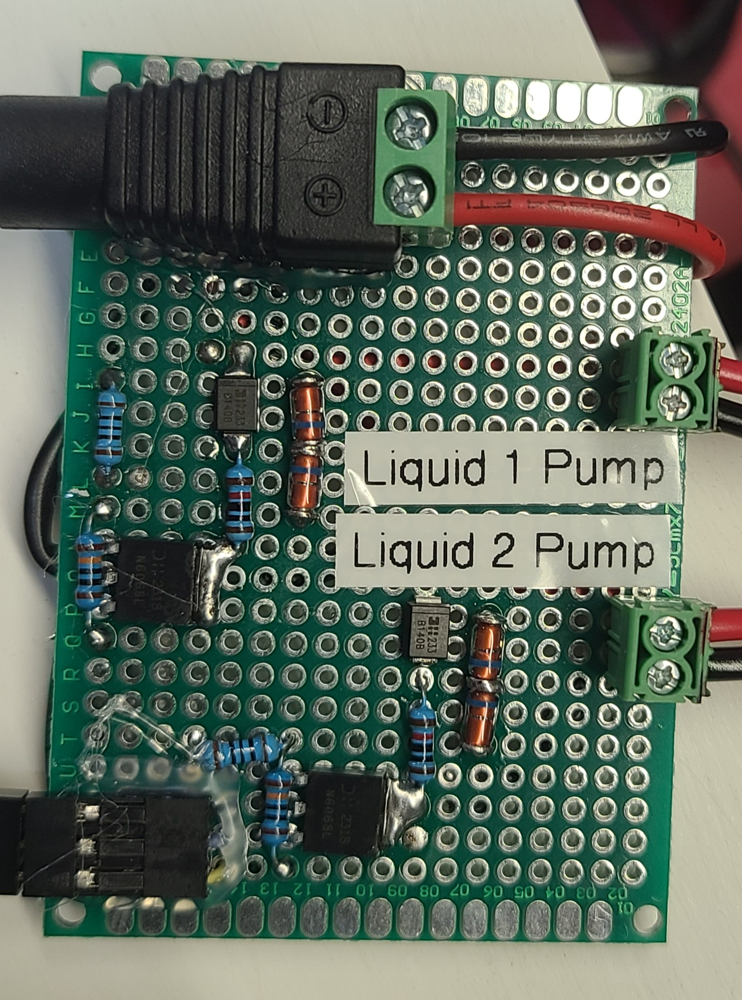
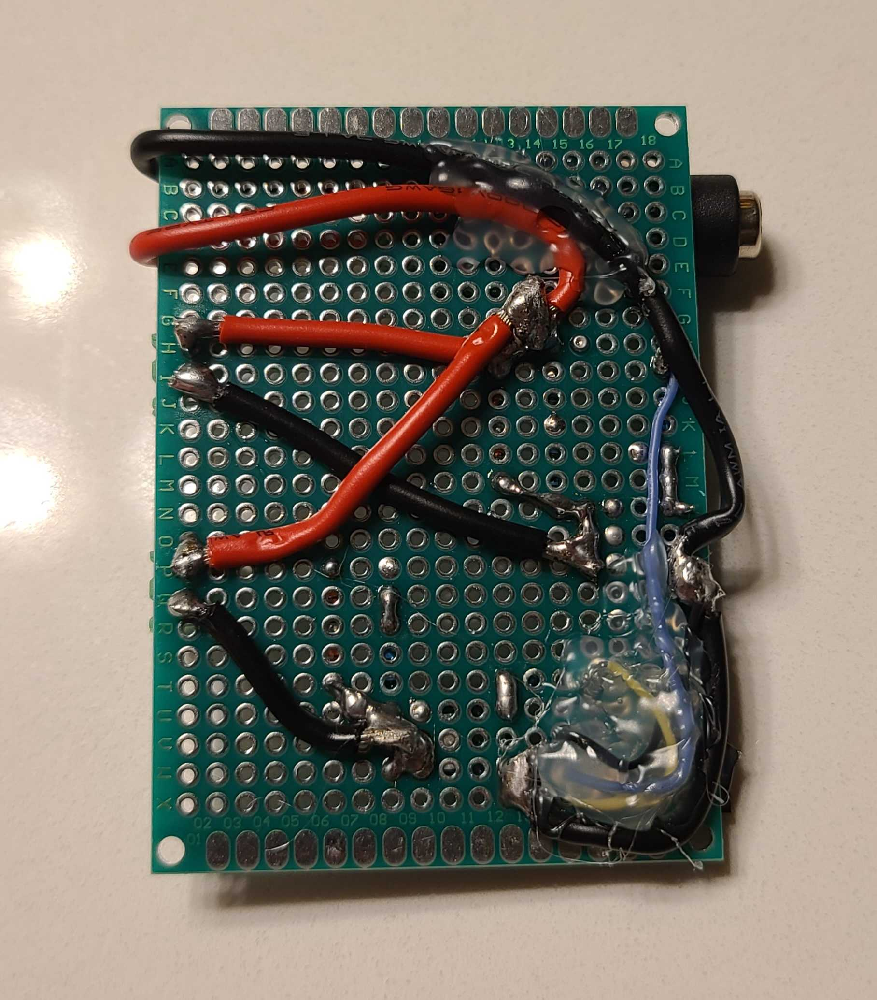
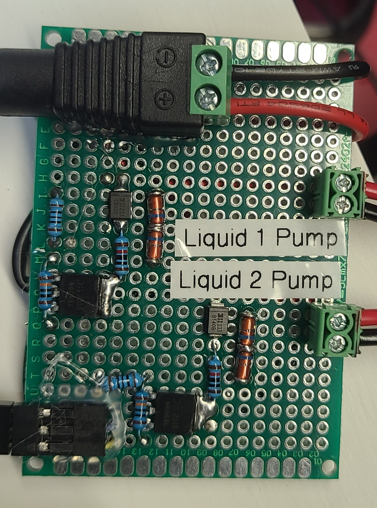
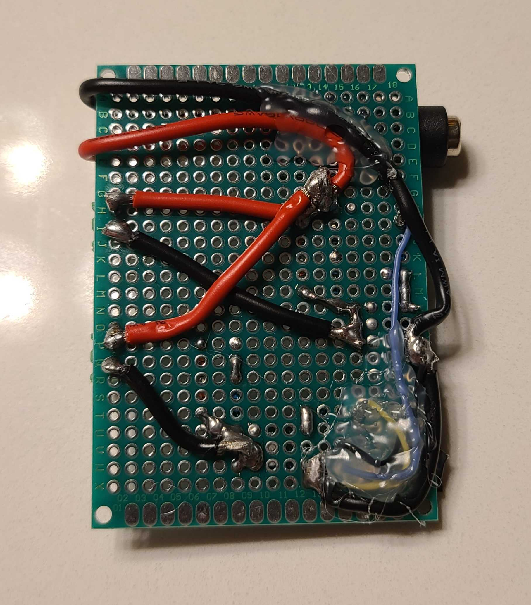
Pool Pump Relay Controller:
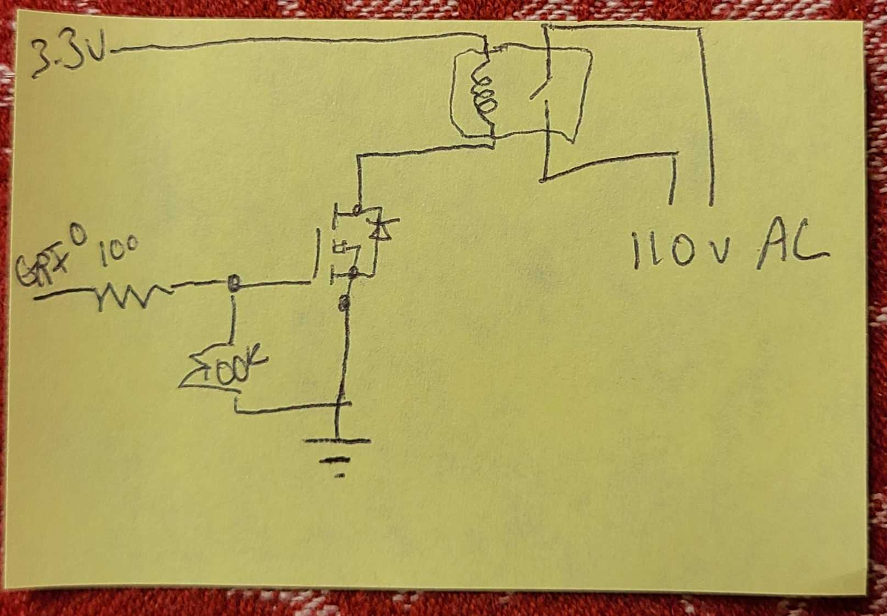 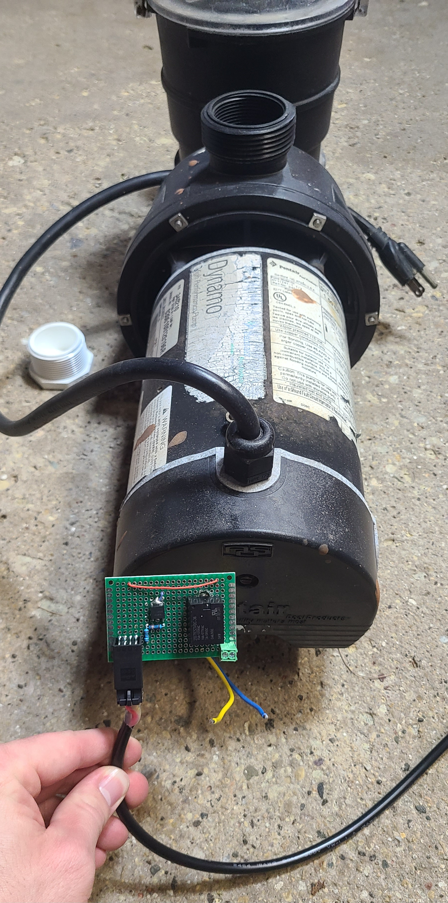Sensor Breakout Board:
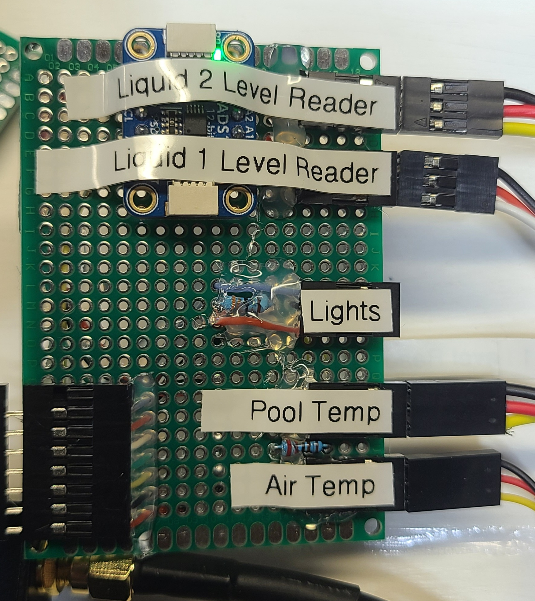Break out 5v and ground to each of the 2 temperature probes, chemical level readers, A to D reader, and LEDs.
Break out A to D Analog 0 and 1 to chemical level reader signal line
Break out GPIO to Red and Blue LEDs
Break out GPIO to temperature sensors data lines
Rasbperry Pi Casing:
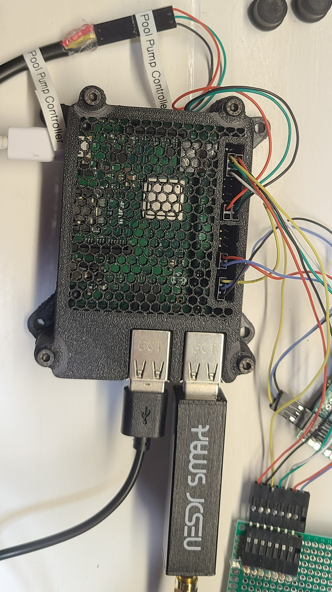Chemical Tanks & Electronics:
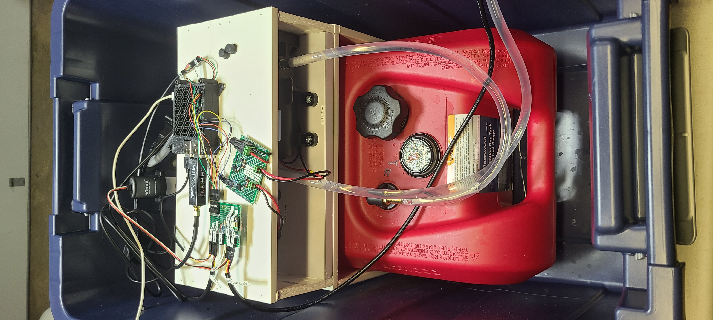 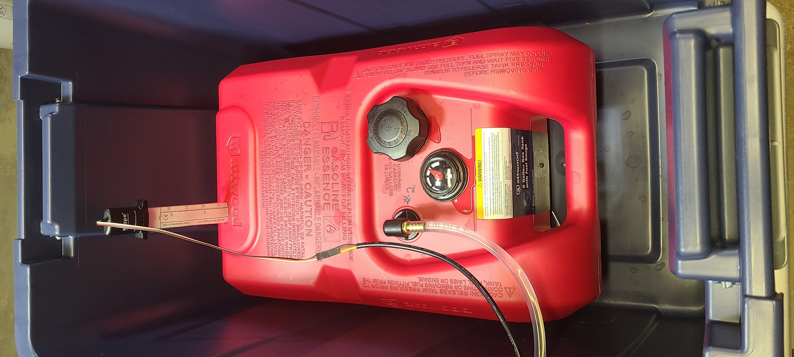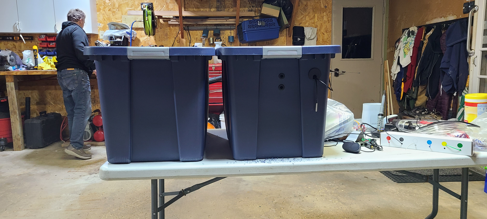 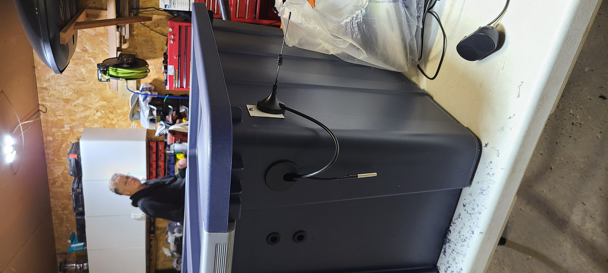
Acurite wireless rain gauge:
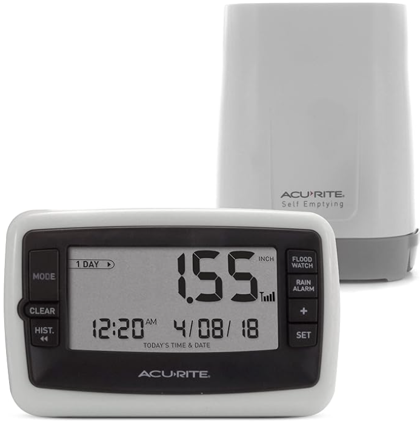433 MHz Rain Gauge signal bytes we care about:
uint16_t sensor_id = ((bb[0] & 0x3f) << 8) | bb[1];
int battery_low = (bb[2] & 0x40) == 0;
int channel = bb[0] >> 6; // Channel A, B, or C
raincounter = ((bb[5] & 0x7f) << 7) | (bb[6] & 0x7f);
Web Application 2.0:
Web Application 1.0:
Pumping out exactly half a gallon
*Trying to prevent pool from turning into a vat of acid*
Able to read the fluid levels and display them on the webpage in real time as the vase gets filled with water.
Future Goals
|
Camera in the pool basket. |
|
Extra 2 granular dispensing vats for PH-up and PH-down (get added as needed). |
|
Un-invasively read the current of the pool motor to learn when it is working harder, ie) the basket is full and automatically shut off the pump using the idea that a motor’s driving current goes up with the amount of force counteracting it from spinning – OR – Use a water flow meter in the water pipeline to see if water flowage has slowed. |